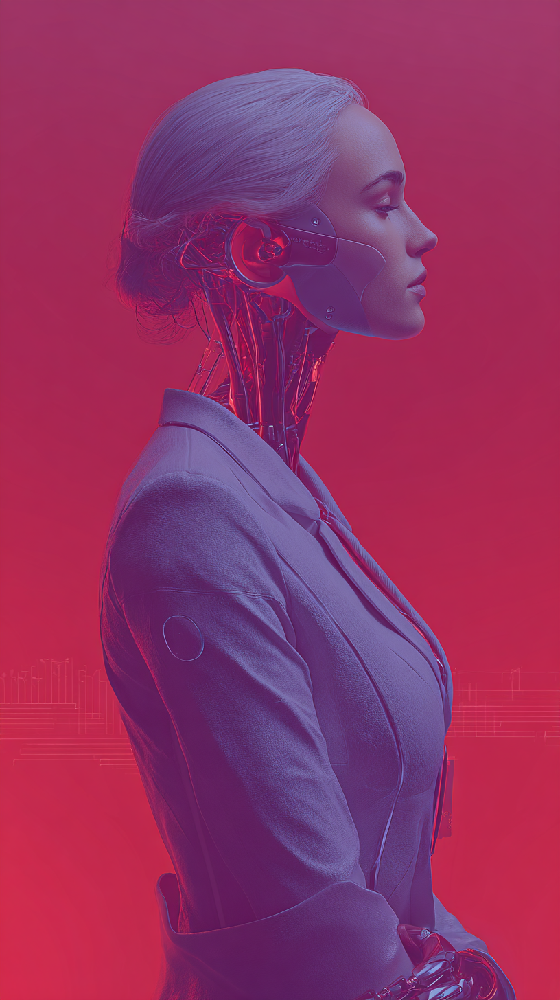

У меня всегда была мечта иметь личного помощника-робота. Такого, какого вы видели в кино - Железный Человек, Космическая Одиссея 2001 и многие другие. С развитием ИИ в последние годы мы стали приближаться к воплощению этой идеи в реальность. На рынке стало появляться десятки, а то и сотни «обёрток» вокруг ChatGPT, тысячи репозиториев так называемых Jarvis, десятки тысяч чат-ботов. Сами производители LLM стали встраивать такой функционал в свои продукты (Claude Cowork, Microsoft Copilot). Стали появляться агентные сети (OpenClaw, CrewAI) - и росту этому нет предела.
Перепробовав все возможные комбинации из LLM, агентов и сторонних сервисов, меня по-прежнему не устраивало, что все их нужно дорабатывать и подстраивать под мои нужды. Никто из них не мог так нативно встроиться в мой workflow, как мне хотелось бы. И у многих был чёрный ящик под капотом - это не позволяло мне чётко знать и видеть как они устроены и иметь полный контроль над их поведением.
Мечта, описанная мною выше, никуда не исчезла - так что в совокупности с необходимостью - родилась Долорес. Мой персональный ассистент, заточенный и созданный исключительно под меня и мои рабочие процессы. Которого я могу изменять, развивать и внедрять в точности так, как мне нужно, имея полный контроль над ним.
В эпоху вайб-кодинга эта задумка реализовалась намного быстрее. Более того - сейчас Долорес учится сама писать код и создавать решения. Под её капотом постепенно создаётся такая же агентная сеть, которая используется мною в разработке и создании проектов, над которыми я тружусь.

Долорес живёт сразу в пространствах, где я работаю - в виде веб страницы, в моем Mac в трее для голосового управления и тихого слушания, а также в Telegram-боте и моих каналах, где я веду проекты и пишу много заметок. Это создает отдельное удобство взаимодействия с ней и она лаконично "вшита" в мой рабочий процесс.
Память. Для меня личный помощник - это тот, кто знает меня лучше всего, понимает мои процессы и задачи, знает мои проекты, мои мысли и идеи и может предугадывать мои потребности. И для этого ему нужна память. Я попытался создать и создаю до сих пор такую память для Долорес, с помощью которой она действительно сможет быть глубоко погружена в контекст моей деятельности. После каждого диалога она в фоне анализирует что было сказано и сохраняет важное. Факты обо мне, о моих проектах, о том как я думаю и работаю. И с каждым разговором этот слой становится глубже. Я до сих пор ищу идеальное сочетание технологий, что-то работает хорошо, что-то еще требует дополнительного тюнинга. Но уже сейчас я довольствуюсь тем, как она ловко находит пересечения с темами, которые мы обсуждали месяцы назад и меняет свой характер на основе постоянных взаимодействий со мной.
Инструменты. Я постоянно расширяю то что она умеет: управление календарём, создание документов, поиск, заметки, дайджест новостей, анализ файлов и фото. Отдельно работает Архивариус - вложенный агент который ведёт мою личную базу знаний. Создаёт карточки, индексирует, находит нужное по смыслу. Я много работаю с Heptabase, Obsidian, Apple Notes и сейчас имею вторые руки и второй мозг, который помогает мне все это грамотно организовать.
Более того - сейчас Долорес учится сама писать код и создавать решения. Под её капотом постепенно вырастает та же агентная сеть, которую я использую во всех своих проектах. Система начинает участвовать в собственном развитии.
Ну и в заключении - это не финальная версия. Это процесс. Я не «сделал ассистента» и не поставил галочку. Я строю что-то что растёт вместе со мной, постоянно обогащая ее новым функционалом и реализуя свежие идеи. Что-то работает хорошо, что-то требует длительной отладки и дополнительной разработки. Но в любом случае - это живая система и я получаю огромное удовольствие от наблюдения за тем, как и куда она растет.